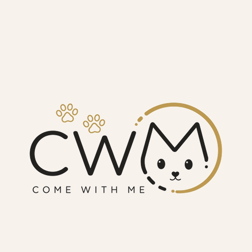

Come With Me Studio
Тест встановлення застосунку. Це окрема демонстрація без платних ігор.
Тестова версія · без офлайн-доступу
Тест встановлення застосунку. Це окрема демонстрація без платних ігор.
Тестова версія · без офлайн-доступу